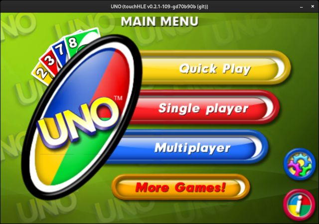

| App name | UNO |
|---|---|
| Release year | 2009 |
| Developer/Publisher | Gameloft |
| First reported | |
| First reported by | @conneath |
| Version number | Display name | Bundle identifier | Minimum iOS version | Best rating | Last updated | First reported by | |
|---|---|---|---|---|---|---|---|
| 1.1.6 | UNO | com.gameloft.uno | (not specified) | ⭐️⭐️ | @conneath | ||
| 1.3.1 | unoiPad | com.gameloft.unoiPad | 3.2 | ⭐️⭐️ | @HunterGM360 | ||
| 1.5.4 | UNO | com.gameloft.uno | 2.2.1 | ⭐️⭐️ | @totvrey5 | ||
| 1.9.7 | UNO | com.gameloft.uno | 3.0 | ⭐️⭐️ | @totvrey5 |
| Version number | touchHLE version | Operating system | GPU | Scale hack supported? | Rating | Reported | Reported by | Remarks | Screenshot |
|---|---|---|---|---|---|---|---|---|---|
| 1.3.1 | v0.2.3-108-g069073e3 | Android 12 | PowerVR GE8320 | Didn't test | ⭐️⭐️ | @HunterGM360 | iPad version works on main menu, but the touchscreen and orientation are inverted. Also, it needs to use "--landscape-left(or right)" | View | |
| 1.9.7 | v0.2.2-360-g5692272 | Android | Mali-G71 | Yes | ⭐️⭐️ | @totvrey5 | View | ||
| 1.5.4 | v0.2.2-360-g5692272 | Android | Mali-G71 | Yes | ⭐️⭐️ | @totvrey5 | View | ||
| 1.1.6 | v0.2.2-175-g4216f68 | Ubuntu | Intel UHD Graphics 620 | Yes | ⭐️⭐️ | @nighto | Still crashing, but the error changed: thread 'main' panicked at src/dyld.rs:604:9: Call to unimplemented function _socket | ||
| 1.1.6 | v0.2.1-109-gd70b90b | Debian 12 (Bookworm) | RTX 3080 Ti | Yes | ⭐️⭐️ | @spike11302000 | "Call to unimplemented function _signal" when hitting any of the play buttons | View | |
| 1.1.6 | v0.2.1-78-gd771063 | Windows 10 (1809) | NVIDIA GeForce GTX 1650 Ti | Couldn't test | ⭐️ | @conneath | crashes with "Class 0x3000b1c0 (metaclass "NSLocale", 0x3000b1b0) does not respond to selector "currentLocale"!" |
| Rating | Description |
|---|---|
| ⭐️ | Completely broken: app crashes immediately without any user interaction. |
| ⭐️⭐️ | Only (part of) the main menu, intro or similar is working. |
| ⭐️⭐️⭐️ | Some of the main content of the app works, but with major issues. |
| ⭐️⭐️⭐️⭐️ | The main content of the app works (e.g. entire game is playable) with only small issues. |
| ⭐️⭐️⭐️⭐️⭐️ | Everything works. The app is fully usable. |
